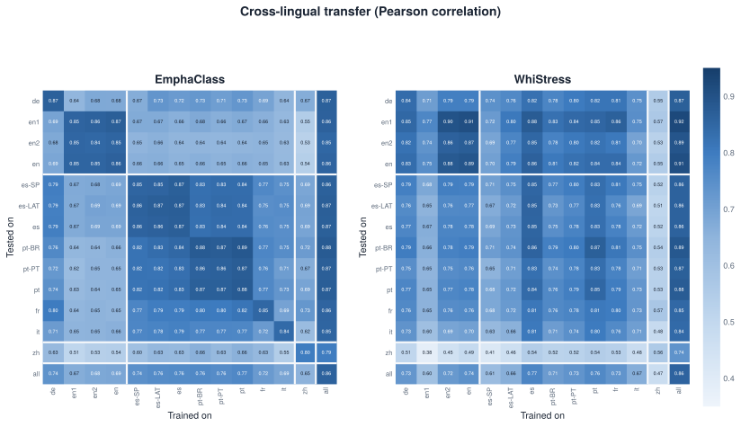
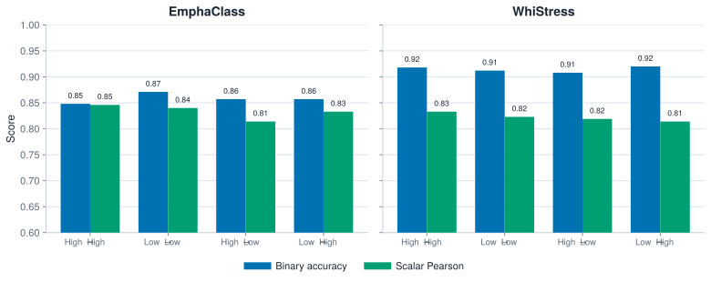
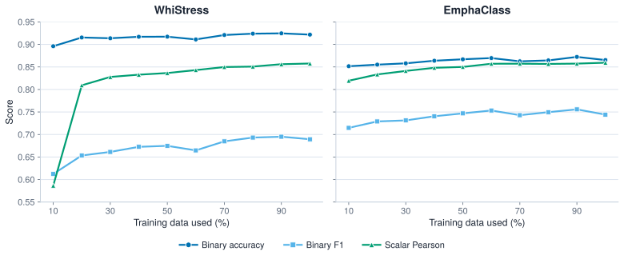

“It’s fine” and “It’s FINE” are two VERY different sentences. The latter meaning… disaster.
Speech emphasis is a subtle and deeply human aspect of communication: it’s realized in acoustics, but shaped by linguistic structure, emotion, speaker intent, and cultural context. Research on modeling it is growing, from emphasis detection and TTS prosody control to speech-to-speech translation and reasoning about user intent. Still, it remains underexplored in multilingual and emotionally expressive settings. As voice agents get deployed to a global and diverse user base, building models that interpret emphasis reliably across speakers, languages, emotions, and cultures becomes essential.
In our work, we introduce a large-scale expressive speech dataset (MMEE) and benchmark two state-of-the-art speech emphasis detection models (EmphaClass and WhiStress) across languages, emotions, dataset scales, and existing synthetic datasets.
We found:
- Monolingual models show limited transfer to other languages, particularly across different language families. Multilingual training largely closes the gap.
- Models transfer robustly between high-arousal and low-arousal emotions.
- Performance stays strong even with a fraction of the training data.
- Models transfer strongly between synthetic and real data, in both directions.
Dataset
We curated Multilingual Multi-Emotion Emphasis (MMEE): the first corpus to combine multilingual coverage, emotionally expressive speech, and graded human emphasis annotations at scale, with 10,000 utterances spanning 14.13 hours, recorded by 202 professional voice actors. The dataset covers 34 emotion and speaking style categories and 7 languages (with 10 regional varieties): English Americas (North American, Southern, African American), English Other (Indian, Australian, British), Spanish (Spain), Spanish (Latin America), Portuguese (Portugal), Portuguese (Brazil), German, French, Italian, and Mandarin Chinese.
Each utterance is annotated with graded word-level emphasis labels, aggregated across 10 annotations. We recruited fluent, native-speaking annotators on Prolific, who listened to each recording and clicked on the words they perceived as emphasized, capturing human perceptual judgment.
Experiments
Languages
Monolingual performance is strong in-language (e.g., train on French, test on French) for most languages. The exception is Chinese, the one tonal language investigated here, where pitch encodes both lexical tone and prominence. Within-family transfer (e.g., Romance to Romance) is also strong, but zero-shot cross-lingual transfer degrades for more typologically distant languages (e.g., French to Chinese).
Multilingual pooled training is more robust, often matching or exceeding monolingual performance, suggesting that exposure to diverse prosodic patterns strengthens emphasis representations.

Emotions
We constructed subsets of our dataset along the arousal dimension of the circumplex model: high arousal (excitement, happiness, pride, determination, anger, fear, anxiety, frustration, and disgust) and low arousal (calmness, relief, love/affection, hopefulness, sadness, boredom, shame, embarrassment, and contempt). High arousal speech tends to have higher pitch, greater intensity, and faster tempo, while low arousal speech tends toward lower, flatter pitch and slower, lengthened delivery. Despite these acoustic differences, both models perform strongly in-domain and transfer well across conditions, suggesting that models pick up on emphasis cues that aren’t tied to any particular emotional delivery.

Dataset Scale
We varied the training data scale from 10% to 100% of MMEE, evenly distributed across the 10 language varieties. Both models benefit from more training data, with rapid initial gains that plateau thereafter. These models are data-efficient, which lowers the barrier to extending emphasis modeling to new and low-resource languages.

Cross-Dataset
We tested whether models trained on MMEE generalize to existing English-only benchmarks built from synthetic speech (EmphAssess and TinyStress-15K), and vice versa. Despite the differences in data and annotation sources (human listeners vs scripts and LLMs), transfer is strong in both directions. This suggests that synthetic and human emphasis data capture shared prosodic structure and that inexpensive synthetic data can still be a useful training source.
| Transfer direction | Binary accuracy |
|---|---|
| MMEE (en) → EmphAssess | 0.886 |
| EmphAssess → MMEE (en) | 0.798 |
| MMEE (en) → TinyStress-15K | 0.873 |
| TinyStress-15K → MMEE (en) | 0.881 |
Takeaways
Emphasis representations in today’s speech models are partially universal; however, they degrade across typologically distant languages. Multilingual training improves robustness. Moreover, it doesn’t take too many training samples to build a strong speech emphasis model, and synthetic data transfers well. Our findings point to practical recipes (multilingual pooling, modest data sizes, synthetic bootstrapping) for building voice agents that better understand the intent of people around the world.